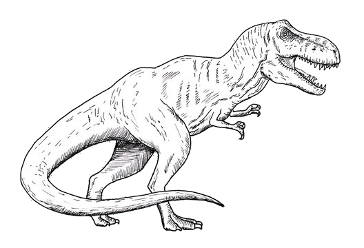
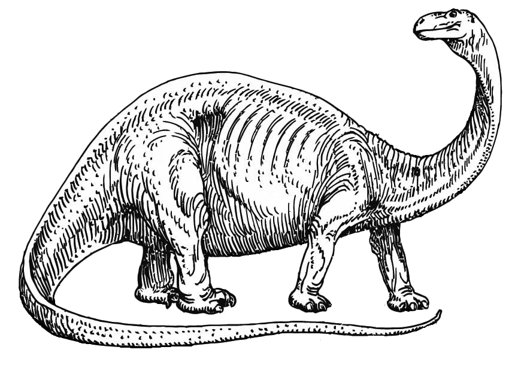
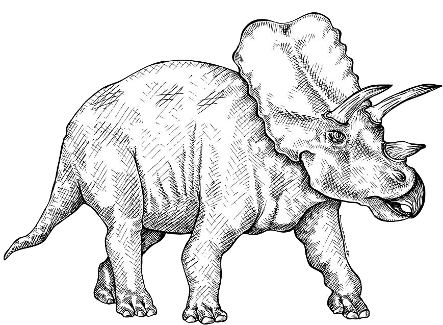

A dinoszauruszok az ősi földtörténetünk egyik legismertebb csoportját képezik. Ezek a hatalmas hüllők millió évvel ezelőtt uralmuk alatt tartották a Földet több mint 150 millió éven keresztül, és számos formában és méretben léteztek. A legfontosabb jellemzőjük az volt, hogy hatalmas testméreteket értek el, és sokuknak különleges jellegzetességei voltak, mint például a hosszú nyak vagy a páncélozott test. Kutatásaik és fosszíliáik révén az emberiség egyre többet tud meg a dinoszauruszokról, és ezek az ősi lények továbbra is izgalmas tanulmány tárgyát képezik a paleontológusok és a közönség számára egyaránt.
  Stíluslap: